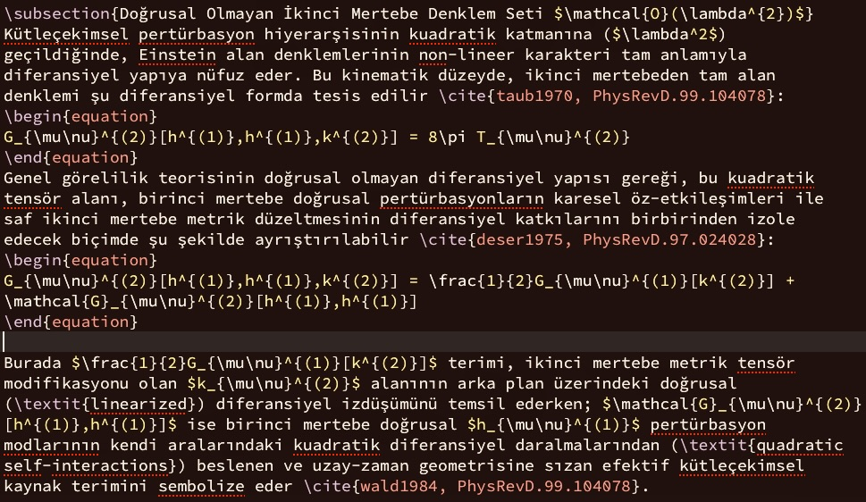
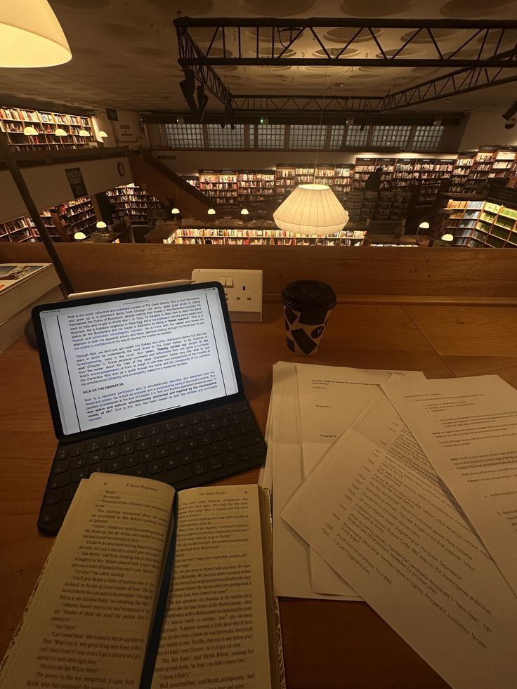

About Me & Vision
Academic goals, test scores, curriculum, and Erasmus+ experiences at Masaryk University.

Current Research & Links
Independent research, active projects, general notes, and seminar materials.

Research Tools & Resources
Core tools, software, and digital academic resources used in my research.
Academic Blog & Research Notes
Course notes, research updates, articles, and reflections on mathematics.
Academic Blog & Research Notes
Lecture notes, topics I am currently working on, academic research, interesting papers, and articles related to my field.
Levent Alpöge, Claude Fable 5, and the Future of the Jacobian Conjecture
I wanted to take a closer look at the major news that recently surfaced across mathematical communities and social media. The Jacobian Conjecture, open since 1939 in algebraic geometry and famous for its history of incorrect proofs, experienced a significant turning point on July 20, 2026. Mathematician and Anthropic researcher Levent Alpöge shared a concrete counterexample disproving the conjecture in 3 dimensions ($n=3$), announcing it via a short post on X (Twitter) rather than a formal paper.
Background of the Discovery
What makes this breakthrough particularly interesting is that Alpöge utilized Anthropic's next-generation large language model, Claude Fable 5, in the process. AI tools have been increasingly applied to unsolved mathematical problems, yielding notable results. For the Jacobian Conjecture, a 3-dimensional polynomial system—where manual verification of the degree and term count would be intractable—was identified, featuring a constant Jacobian determinant without a polynomial inverse.
What Comes Next?
This counterexample for $n=3$ opens up new directions for research:
- The 2-Dimensional ($n=2$) Case Remains Open: In the literature, the 2-variable case and the general $n$-variable case have often been treated separately. While the $n=3$ case has been disproved, $n=2$ remains unsolved and continues to be a central topic of study.
- Dixmier Conjecture: This topic is closely connected to algebraic geometry as well as the Dixmier Conjecture in quantum mechanics and algebraic structures. Disproving $n=3$ prompts a re-examination of these equivalent formulations.
- Formal Peer Review Pending: It is worth noting that this result has not yet been published in a peer-reviewed academic journal. The symbolic calculations were independently reproduced, and the counterexample was verified in the Lean proof assistant within hours; however, traditional peer review and a formal manuscript are still forthcoming.
Connecting to the Leiden Declaration
This announcement also intersects with broader discussions on AI in mathematics. Shortly before this result, on June 2, 2026, sixteen researchers from fifteen universities published the "Leiden Declaration on Artificial Intelligence and Mathematics", endorsed by the International Mathematical Union (IMU). Originating from a Lorentz Center workshop at Leiden University in September 2025, the declaration addresses verifiability, citation transparency, research autonomy, funding, and equitable access.
Alpöge's announcement relates to the declaration's core themes in several ways:
- Transparency in AI Usage: Alpöge explicitly credited Claude Fable 5 as a co-discoverer and provided Wolfram Alpha verification links, aligning with the declaration's call for clear disclosure of AI tools.
- Dissemination Channels: The result was announced on social media by a researcher at an AI company (Anthropic) prior to traditional peer review, highlighting ongoing shifts in how mathematical discoveries are shared and evaluated.
- Verification Speed: Rapid verification in proof assistants demonstrates new capabilities while raising questions about how traditional reviewing systems adapt to AI-generated results.
This milestone represents both a notable mathematical achievement and an example of evolving methodologies in research.
Below you can find links to Levent Alpöge's personal website, the original text of the Leiden Declaration, and its Turkish translation:
[Sources & References]:
- Keller, O. H. (1939). "Ganze Cremona-Transformationen". Monatshefte für Mathematik und Physik, 47(1), 299-306.
- Smale, S. (1998). "Mathematical Problems for the Next Century". The Mathematical Intelligencer, 20(2), 7-15.
- Alpöge, L. X post, July 20, 2026. (Based on a social media announcement and independent verification; formal peer-reviewed manuscript pending).
- Bass, H., Connell, E. H., & Wright, D. (1982). "The Jacobian conjecture: reduction of degree and formal expansion of the inverse". Bulletin of the American Mathematical Society, 7(2), 287-330.
- Dixmier, J. (1968). "Sur les algèbres de Weyl". Bulletin de la Société Mathématique de France, 96, 209-242.
- Leiden Declaration on Artificial Intelligence and Mathematics (2026). Published: June 2, 2026. Prepared at Lorentz Center, Leiden University workshop (September 2025); supported by the International Mathematical Union (IMU). leidendeclaration.ai